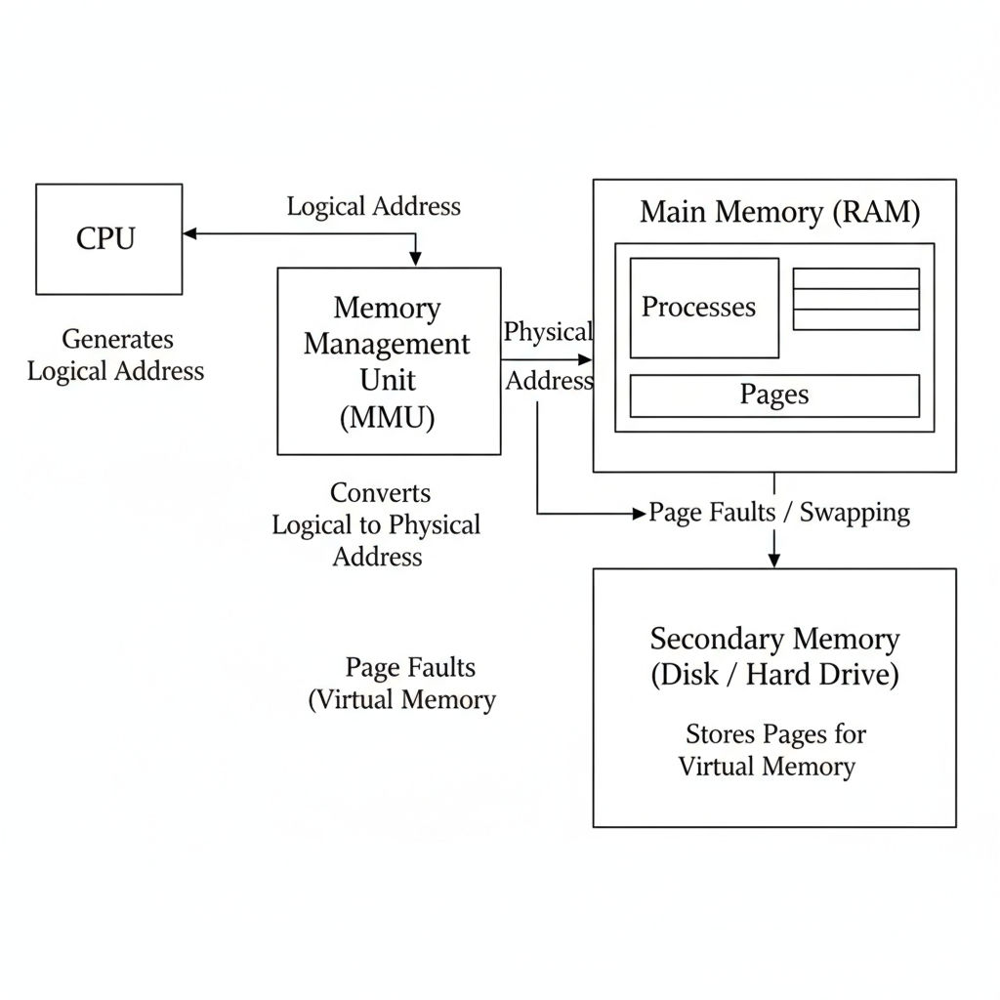
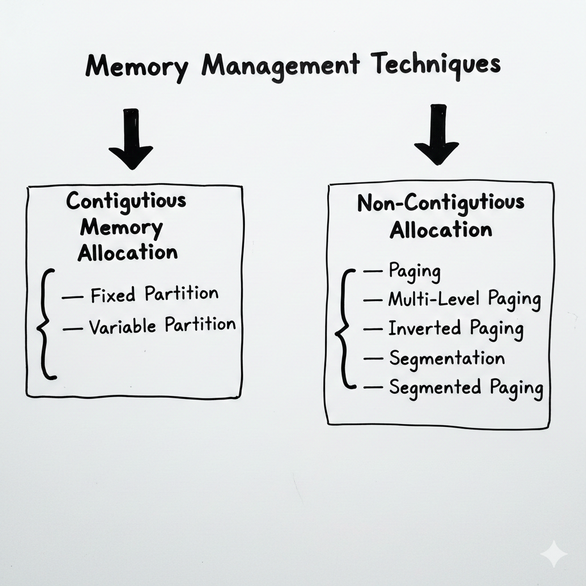
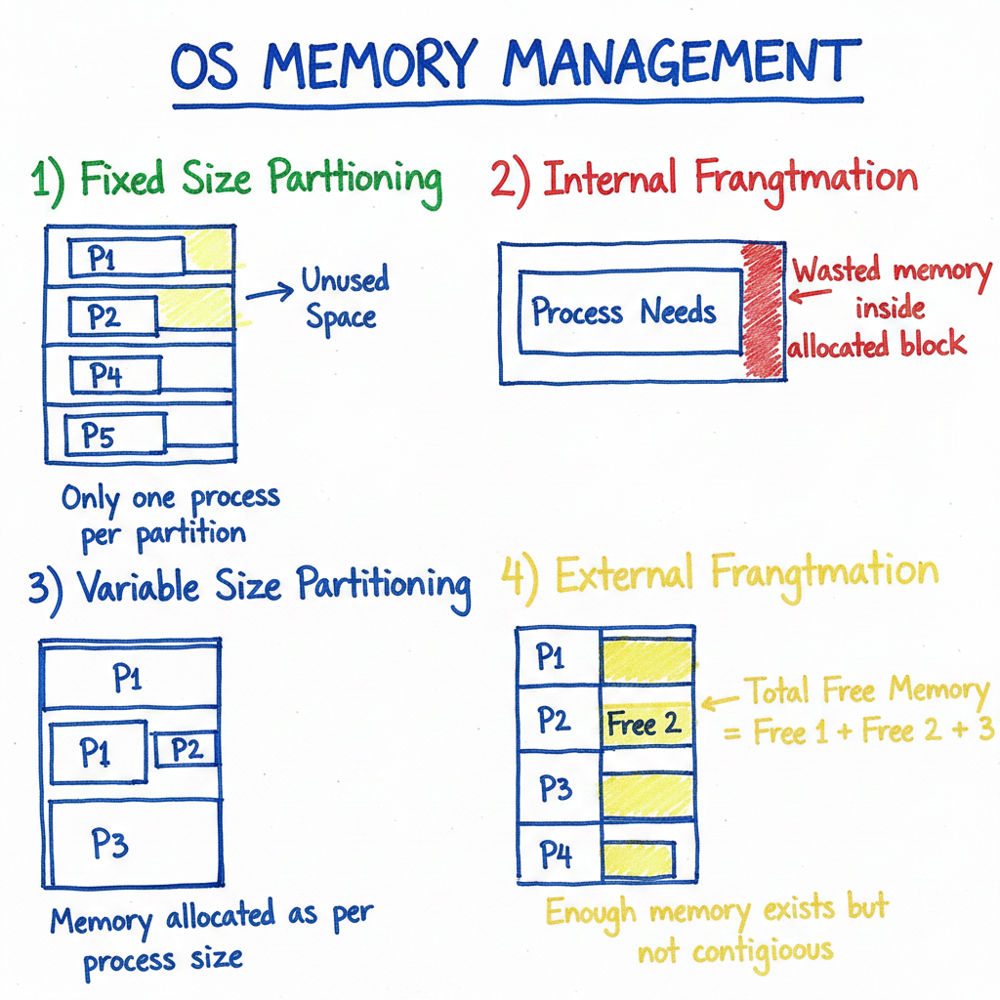
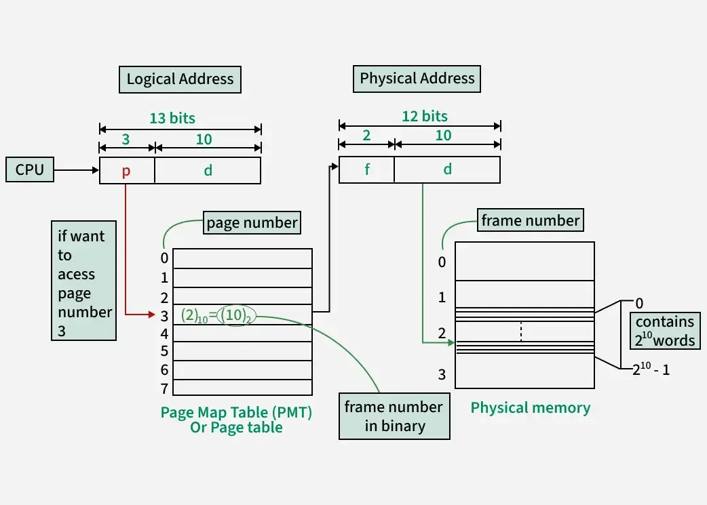
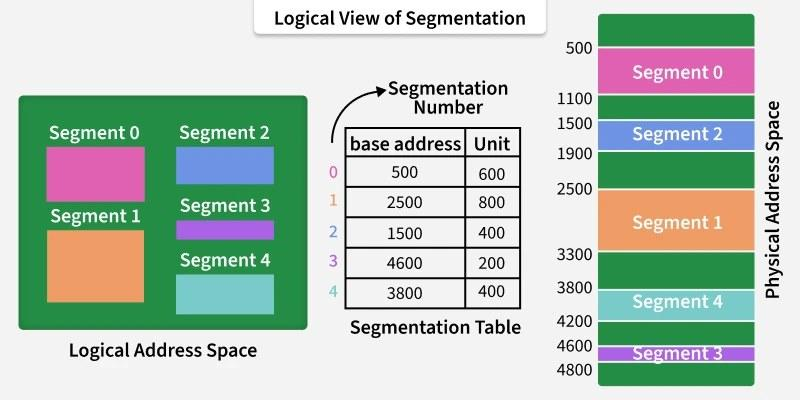
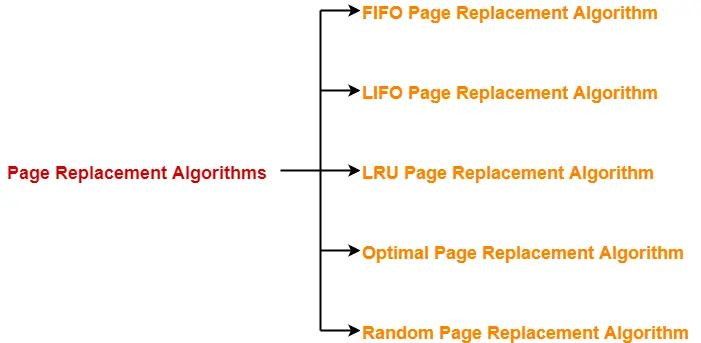
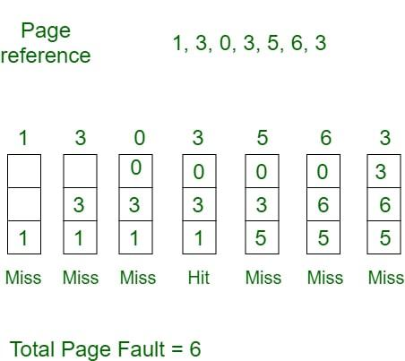
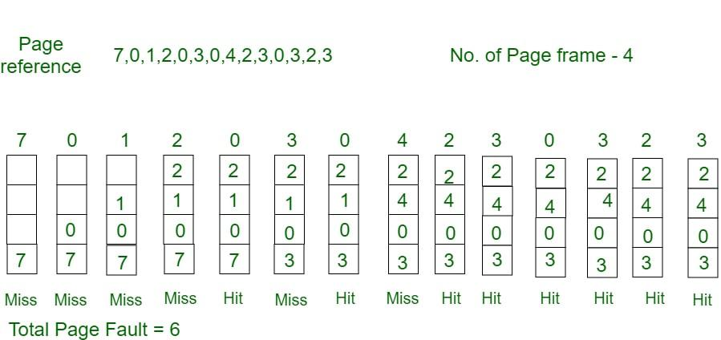
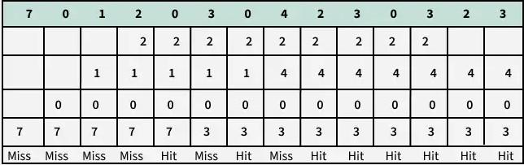
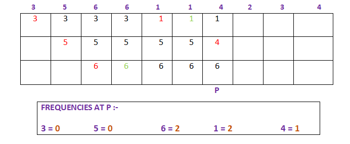

1️⃣ Introduction to Memory Management
2️⃣ Objectives of Memory Management
3️⃣ Logical Address and Physical Address
4️⃣ Address Binding
5️⃣ Memory Management Unit (MMU)
6️⃣ Degree of Multiprogramming
7️⃣ Contiguous Memory Allocation
8️⃣ Fixed Size Partitioning
9️⃣ Internal Fragmentation
🔟 Variable Size Partitioning
1️⃣1️⃣ External Fragmentation
1️⃣2️⃣ Memory Allocation Strategies
1️⃣3️⃣ Memory Allocation with Timeline (GATE)
1️⃣4️⃣ Paging
1️⃣5️⃣ Need of Paging
1️⃣6️⃣ Paging Address Translation
1️⃣7️⃣ Paging Numericals
1️⃣8️⃣ Segmentation
1️⃣9️⃣ Paging vs Segmentation
2️⃣0️⃣ Virtual Memory
2️⃣1️⃣ Demand Paging
2️⃣2️⃣ Page Fault
2️⃣3️⃣ Effective Access Time (EAT)
2️⃣4️⃣ Page Replacement Algorithms
2️⃣5️⃣ FIFO Algorithm
2️⃣6️⃣ LRU Algorithm
2️⃣7️⃣ Optimal Algorithm
2️⃣8️⃣ Belady’s Anomaly
2️⃣9️⃣ Thrashing
3️⃣0️⃣ Working Set Model
3️⃣1️⃣ Translation Lookaside Buffer (TLB)
3️⃣2️⃣ Memory Protection
3️⃣3️⃣ Buddy System
3️⃣4️⃣ Interview and GATE Important Points
Memory management is a function of the operating system that manages main memory (RAM). It keeps track of which part of memory is used and which part is free. It also decides how memory is allocated to processes and released after use.
Memory is a limited resource. Proper management is required to run multiple programs efficiently.

📘 Logical address is generated by the CPU. It is also called virtual address. Programs use logical addresses.
📙 Physical address is the actual address in the main memory. It is used by memory hardware.
Address binding is the process of mapping logical addresses to physical addresses.
MMU is a hardware device that converts logical addresses into physical addresses. It is present between CPU and main memory.
Degree of multiprogramming is the number of processes present in main memory at the same time.
Degree of Multiprogramming = Number of processes in main memory

In contiguous memory allocation, each process is allocated a single continuous block of memory.
Main memory is divided into fixed-size partitions. Each partition can contain only one process.
🧪 If memory is divided into 5 partitions of 100 MB each, maximum 5 processes can be loaded.
Internal fragmentation occurs when allocated memory is more than required memory.
🧪 A process needs 80 KB but is allocated 100 KB. Wasted memory is 20 KB.
Memory is divided dynamically based on process requirement.
External fragmentation occurs when enough free memory is available but not in one continuous block.

➡ First available block that is sufficient is allocated.
📏 Smallest suitable block is allocated.
📦 Largest free block is allocated.
🔁 Search continues from last allocation point.
⏱ Processes arrive and leave memory at different times. Allocation and deallocation are done dynamically. This concept is frequently asked in GATE.
In non-contiguous memory allocation, a process is not stored in one continuous block of memory. Instead, it is divided into parts and stored at different locations in main memory. This approach improves memory utilization and supports virtual memory.
Paging divides logical memory into fixed-size pages and physical memory into fixed-size frames. Page size and frame size are equal.

(Based on Logical → Physical Address Translation Diagram)
Offset bits = 10
Page Size = 2 ^ (offset bits)
Page Size = 2 ^ 10
✅ Page Size = 1024 words
📌 GATE Point: Page size is always calculated using offset bits.
Page number bits = 3
Number of Pages = 2 ^ (page number bits)
Number of Pages = 2 ^ 3
✅ Total Pages = 8
(Page numbers: 0 to 7)
Using address bits:
Logical Address Space = 2 ^ 13
OR
Logical Address Space = Number of Pages × Page Size
= 8 × 1024
✅ Logical Address Space = 8192 words
Offset bits in physical address = 10
Frame Size = 2 ^ 10
✅ Frame Size = 1024 words
📌 GATE Point: Page size = Frame size (always).
Frame number bits = 2
Number of Frames = 2 ^ (frame number bits)
Number of Frames = 2 ^ 2
✅ Total Frames = 4
(Frame numbers: 0 to 3)
Physical Memory Size = Number of Frames × Frame Size
= 4 × 1024
✅ Physical Memory Size = 4096 words
| Page Number (3 bits) | Offset (10 bits) |
| Frame Number (2 bits) | Offset (10 bits) |
📌 GATE Point: Offset bits never change during address translation.
If CPU wants to access page number = 3:
(p = 3, d)p = 3 to access page tablef = 2)(f = 2, d)✅ Offset remains same
2 ^ offset bits2 ^ page number bits2 ^ frame number bitsIf page size = 4 KB and process size = 16 KB, then total pages = 4.
Multi-level paging divides a large page table into multiple levels to reduce memory usage.
Page table is also paged
Used in large address space systems
Multiple memory accesses needed
✅ Saves page table memory
❌ Slower address translation
In inverted paging, a single global page table is used for the entire system. Each entry represents a frame instead of a page.
Entry contains process ID and page number
Hashing is used for fast lookup
✅ Very small page table
❌ Complex searching and sharing
Segmentation divides memory into logical units like code, data, and stack. Each segment has a base and limit.
Segment Number + Offset
Segmented paging combines segmentation and paging. Segments are divided into pages.

Segment Number → Page Number → Offset
| Technique | Fragmentation | Key Idea |
|---|---|---|
| Paging | Internal | Fixed-size pages & frames |
| Multi-Level Paging | Internal | Page table divided into levels |
| Inverted Paging | Internal | Single global page table |
| Segmentation | External | Logical memory division |
| Segmented Paging | Minimal | Segmentation + Paging |
Paging is required to:
Paging divides logical memory into pages and physical memory into frames.
🧮 Logical Address = Page Number + Offset
🧮 Physical Address = Frame Number + Offset
If logical address size is 32 bits and page size is 4 KB:
Segmentation divides memory based on logical units like:
Each segment has base and limit.
🖼 (Image showing segments with base and limit)
Virtual memory allows execution of programs larger than physical memory.
📥 Pages are loaded into memory only when they are required.
⚠ Page fault occurs when required page is not present in main memory.
EAT is the average time required to access memory considering page faults.
📐 Formula:
EAT = (1 − p) × Memory Access Time + p × Page Fault Time
🔄 Used when memory is full and a page fault occurs.





Belady’s Anomaly is a phenomenon in Operating Systems where:
Increasing the number of page frames results in an increase in the number of page faults.
Normally, when more frames are added, page faults should decrease.
But in Belady’s Anomaly, the opposite happens.
Occurs only in FIFO (First In First Out) page replacement algorithm
Does not occur in:
Page reference string:
1 2 3 4 1 2 5 1 2 3 4 5
| Number of Frames | Page Faults |
|---|---|
| 3 frames | 9 |
| 4 frames | 10 ❌ |
➡ Increasing frames increases page faults → Belady’s Anomaly
Belady’s Anomaly is the condition in which increasing the number of page frames leads to an increase in page faults when using FIFO page replacement.
🔥 System spends more time in paging than executing processes.
📚 Working set is the set of pages used by a process in a given time interval.
🚀 TLB is a high-speed cache that stores recent page table entries.
🔐 Memory protection prevents illegal memory access using base and limit registers.
🧩 Buddy system allocates memory in powers of two.